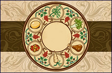

 When dipping the Karpas into salt water: Has anything ever happened to you which seemed bitter at the time but later turned out to be sweet? When breaking the middle matzah and hiding it for later: What is a “hidden” aspiration that you have, i.e. something that you have postponed for later in life but you plan/aspire to one day get to? When speaking about God’s promise to Abraham: Why did Abraham merit to be the father of the Jewish people? What does it mean to be the child of Avraham? Are we living up to it? What contributions have the Jewish people made to humanity over history? When speaking about how the Jewish people were sent down to Egypt: How have the hardships in our life helped us become better people? During Vehi She’Amdah: Why has there always been so much anti-Semitism in the world? Do you think anti-Semitism is on the rise today? When speaking about the beginnings of Jewish life in Egypt: How does the Jewish people’s assimilation into Egyptian culture resemble Jewish assimilation throughout history? When speaking about Jewish identity in Egypt: What does Jewish identity mean in Exile? When speaking about the harsh slavery: In our day-to-day lives, do we really love what we do or are we more like slaves to our work? The word Mitzrayim (Egypt) resembles the Hebrew word for constriction. What is your personal Mitzrayim? What is holding you back the most? When speaking about the plagues: Are there signs in our life pushing us to change that we are just refusing to see? Are there signs around us that God exists? What are they? Pharaoh Vs. Moses: What are the ingredients to be a great leader? When speaking about the various miracles: Does the existence of the Jewish people defy the natural order of the world? Are we a miracle? If you knew for certain that God would help you succeed, even through miracles, what new endeavor would you take on? When speaking about jumping in the Red Sea: What have you done recently to step out of your comfort zone? When singing Dayneu: What are the gifts in our life that make it all worth it? What Mitzvot/Jewish gifts are you most appreciative of? Israel? Shabbat? Torah? Something else? When reciting Hallel: If you could fully express gratitude to someone in your past who really made a difference in your life, who would it be? When eating matzah: If you could eradicate laziness from your life and live with complete discipline, what could you accomplish?